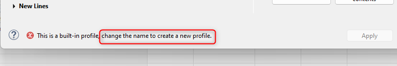
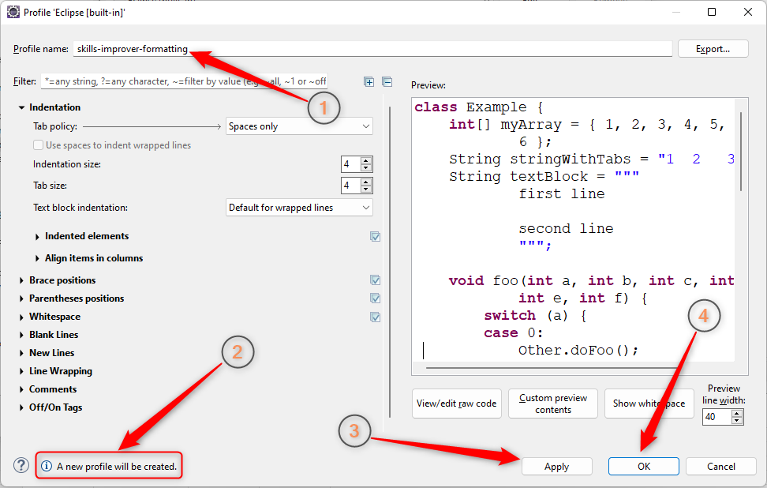

На предыдущем шаге мы узнали, что мы не можем просто так изменить настройки [built-in] профиля.
Об этом Eclipse сообщил нам следующей ошибкой:

Но в этой же ошибке Eclipse подсказал нам, что мы можем придумать новое имя профиля и сохранить под ним свои настройки:

Именно это мы и сделаем!
Придумайте новое имя профиля и введите его в поле Profile name.
Если у вас возникает вопрос — А какое имя для профиля подойдет лучше всего?
—
то на него есть два ответа:
Ответ первый. Дурацкий:
Из разряда Шутки за 300
, но при этом — совершенно правильный:
Абсолютно любое имя!
Лишь бы оно было уникальным, то есть — отличалось от имен других профилей.
И ответ второй. Более академический:
Обычно профилю для настроек форматирования дают такое же имя, как и имя проекта, в котором он используется.
Иногда к нему добавляют суффикс -formatting, чтобы подчеркнуть, что это именно настройки форматирования,
а не что-то другое.
В реальных проектах чаще всего используют именно этот второй вариант. То есть:
Имя профиля для настроек форматирования — это имя вашего проекта + суффикс -formatting
Я пойду по второму — правильному
пути. Я работаю над сайтом skillsimprover.com,
проект мой называется skills-improver, поэтому имя профиля у меня будет:
skills-improver-formatting
Вам я рекомендую сделать то же самое. Придумайте себе проект, придумайте для него красивое название,
и используйте имя своего проекта, для того чтобы ввести его в поле Profile name.
В результате, окно для редактирования профиля у вас должно выглядеть примерно вот так:

После этого нажмите кнопки Apply и OK.
Окно редактирования профиля закроется, и вы снова увидите на экране настройки раздела Formatter.
Всё, что нам остаётся в этом упражнении — убедиться, что профиль, который мы создали, будет использоваться Eclips-ом, и закрыть окно настроек.
Мы сделаем это на следующем шаге упражнения.